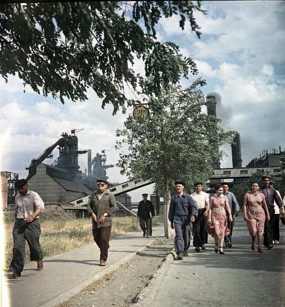
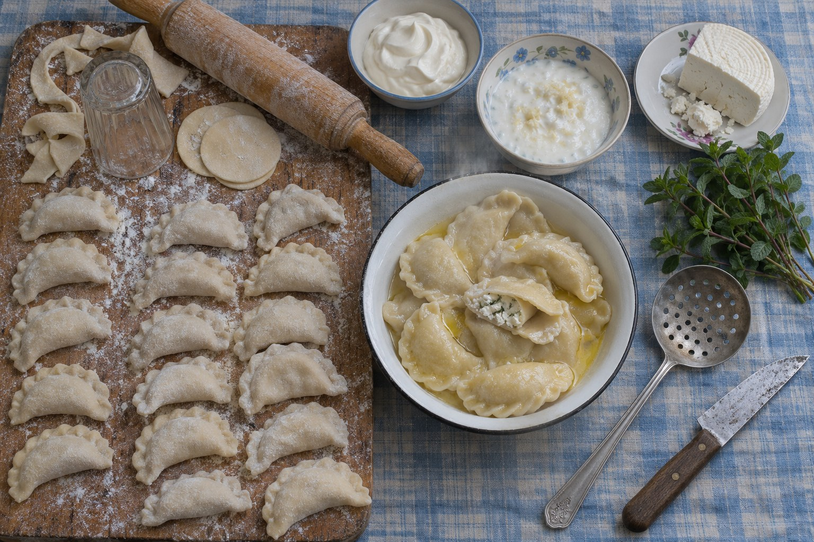

Переплавка

Нет, не так. Край к краю, а потом пальцами вот так, гребешком, как косичку заплетаешь. Если просто сдавить, в воде раскроется, и сыр уйдёт в кастрюлю. Мать такие называла «утопленники» и съедала сама, чтобы никто не видел позора.
Тесто я сделал с утра, оно отдохнуло. Сыр имеретинский, из села, из рассола, я его вчера на ночь в воду положил, чтобы вышла соль. Творог с рынка. Мята моя, с балкона, в ведре из-под краски. В ноябре она уже не та — мелкая, жёсткая, — но пахнет. Сыр и творог — пополам. Это важно, я потом скажу почему.
Мне семьдесят четыре. Я руставец во втором поколении, а у нас это как князь у других. Старше второго поколения в Рустави не бывает, потому что до моих родителей тут была степь, развалины крепости и ветер. Крепость, говорят, стояла до Тамерлана. Потом пришёл Тамерлан, а после него шестьсот лет никто не приходил, пока не пришёл мой отец.
Отца звали Вахтанг, он был из села под Самтредиа. После войны в селе были три коровы на десять дворов и ни одного мужчины старше деда. Приехали из района, собрали ребят и сказали: строим завод, будете делать сталь. Отец спросил, что такое сталь. Ему сказали: то, из чего топор. Он сказал: у нас топор есть. Ему сказали: будет на каждый дом. Вот так его и взяли, на топор.
Сталь в Грузии тогда никто делать не умел, поэтому их повезли учиться в Донбасс, в Енакиево. Там завод с прошлого века, и мастера такие, что по цвету пламени говорили, сколько в стали углерода, и не ошибались. Отец там прожил почти год. По-русски почти не говорил, в общежитии его звали «Ваха-топор», потому что он всем рассказывал, зачем приехал. А в столовой при заводе раздавала компот Галя.
Матери было семнадцать. Она пережила там немцев: два года они стояли в Енакиеве, и она с бабкой жила в погребе под сараем. Отец стал брать компот по три раза за обед. Мать спросила: ты что, так любишь сухофрукты? Он сказал единственную целую фразу, которую знал: «Да, очень». С этого и начали.
Через год он привёз её сюда. Она вышла из поезда, посмотрела на степь, на бараки, на горы вдалеке и сказала: «Ну, тот же Енакиево, только с горами». Она ещё не знала, что здесь даже завода толком нет, одни котлованы. Но по сути она была права.
Мяту режьте мелко, вот нож. Прямо в пыль, чтобы в варенике не было листика, а был только запах.
Первый год жили в бараке на четыре семьи, потом дали комнату в доме. Дома строили немцы, пленные. Мать увидела их в первый же день и села на камень. Отец говорил, что она побелела, как известь. Те же самые люди, от которых она два года пряталась в погребе, стояли теперь на лесах и клали ей кирпич. Худые, в обмотках, один совсем мальчик.
Месяц она ходила мимо стройки другой дорогой. Потом однажды пошла прямо, положила у кучи песка узелок с варёной картошкой и ушла не оборачиваясь. Отцу сказала только после, через много лет. Он спросил: зачем, они же вас… Она сказала: «Вот именно. Они нас не кормили. Хотела посмотреть, как оно, когда наоборот». Отец спросил: ну и как? Она сказала: не знаю, я же не оборачивалась.
В те годы в Рустави каждую неделю справляли новоселье: люди ехали со всей Грузии и со всего Союза. Имеретинцы, мегрелы, рачинцы, армяне, азербайджанцы из соседних сёл, русские, украинцы. У каждого свой стол, своя еда, свои песни, а стена одна, и тонкая. Так сам собой получился руставский стол: хачапури рядом с салом, долма рядом с селёдкой. Никто не удивлялся, удивляться было некогда, все строили.
А вареники вот как вышли. Отец повёз мать показывать своей матери, в село. Бабушка посмотрела на белую худую девочку, которая ни слова не понимает, и не знала, что с ней делать. Свекровь с невесткой должны ругаться, а как ругаться без общего языка? Два дня молчали. На третий день бабушка села месить тесто на хачапури, а мать подошла, отщипнула кусок, раскатала стаканом кружочки и стала лепить. Бабушка смотрела, смотрела, потом взяла из кувшина свой сыр и положила рядом. Мать говорит: нет, в вареники творог. Бабушка говорит: нет, сыр. Слов не понимали, а поспорили отлично. Потом бабушка нарвала мяты, потому что имеретинский сыр без мяты — это как сталь без углерода, железо и всё. Мать принесла из сумки свой городской творог, который везла в подарок. И смешали пополам. Вот почему пополам. Это не рецепт, это перемирие.
Бабушка потом всем в селе говорила, что невестка у неё хорошая, только хачапури лепит маленькие и варит их в воде, бедная.
Вот, уже десять. Кладите на доску, на муку, и не вплотную, а то слипнутся.
Я родился уже здесь, когда завод давал сталь. Двор выходил на завод, ночью потолок в комнате бывал оранжевый — это выпускали плавку. Мы, дети, по цвету потолка знали, чей папа сейчас сливает металл. Во дворе был один язык для всех: смесь грузинского, русского и заводского. Заводской важнее всего, на нём и ругались.
В восемнадцать лет я пришёл в мартеновский цех. Мартен — это печь, длинная, как сарай, в ней чугун и лом держат часами на огне, пока не выйдет сталь. У нас их было восемь, по двести тонн каждая. Восемь печей, и у каждой свой характер, как у тёщи. В цехе жара такая, что зимой мы выходили на мороз в одной рубашке и не замечали мороза. Отец достал мне свои синие очки, через них смотрят в печь, и сказал: не смотри на огонь, смотри в огонь. Я долго не понимал разницы. Потом понял: на огонь смотрит тот, кто боится, а в огонь — тот, кто работает.
Рустави тогда завидовала вся Грузия. Зарплата, квартиры, пионерлагерь на море, дворец культуры. А потом ещё и автодром построили — в семьдесят восьмом, последний в Союзе. По выходным мы стояли там у забора и смотрели, как носятся машины. Мой отец сказал: смотрите, наша сталь бегает. Не знаю, была ли там наша сталь. Но отец так считал, и я не проверял.
Мать каждое лето ездила в Енакиево, к сестре, к тёте Любе, и брала меня. Трое суток поездом. Там тоже завод, тоже оранжевый потолок, только вместо гор терриконы. Двоюродные звали меня «грузин», а в Рустави мальчишки звали «хохол». Я дрался и там, и тут, пока не понял, что можно не драться, а быть и тем и другим. С Иркой, дочкой тёти Любы, мы были одного года и летом не разлучались. Она учила меня лепить вареники на скорость, я её — ругаться по-грузински. Вареники пригодились больше.
Вода закипает. Солите, да, вот так, за сыр не бойтесь, сыр уже пресный.
А потом были девяностые. У вас тоже были, я знаю, но у нас они были темнее, в прямом смысле. Союз кончился, и оказалось, что завод был не сам по себе, а зуб в большой шестерне. Руда из Азербайджана, уголь откуда-то ещё, трубы — неизвестно куда. Шестерня рассыпалась, и зуб остался сам по себе. Печи стали гасить одну за другой. Света в городе не было, потолок ночью был чёрный, и дети уже не знали, чей папа что делает. Папы сидели дома.
Люди уезжали. В середине девяностых нас было сто шестьдесят тысяч, через семь лет сто шестнадцать. Считайте сами, сколько новоселий получилось в обратную сторону. Русские уехали в Россию, украинцы в Украину, грузины кто куда: кто в московские стройки, кто обратно в село, где хоть корова есть. Мать тогда сказала: «Ну вот, сначала степь, и опять степь». Но сама никуда не поехала. Тётя Люба звала её в Енакиево, там завод хоть как-то работал. Мать сказала: у меня тут муж лежит. Отец умер в девяносто четвёртом, зимой, когда света не было совсем. Думаю, ему было тяжелее всех: он видел эту степь пустой и сам её заполнял, а теперь смотрел, как она опять пустеет.
В девяносто девятом погасили последний мартен. Я был в ту смену. Тут надо понимать: печь нельзя просто выключить, как утюг. Если металл застынет внутри, получится «козёл» — глыба в несколько десятков тонн, её потом только взрывать. Для сталевара закозлить печь — стыд на всю жизнь. Поэтому мы выпустили всё до капли, аккуратно, как на праздник, и только потом стали остужать. Стояли всей бригадой и молчали. Старый мастер снял каску. Я первый раз видел его без каски: он был совсем лысый. Двадцать лет работали вместе, и я не знал.
Дальше я вам расскажу смешное, если понимать смешное. После мартена я несколько лет собирал металлолом. Ходил с тележкой по дворам, собирал старые батареи, кровати, трубы и сдавал. А куда сдавал? На наш же завод. Он ведь не умер совсем, он поставил новые печи, электрические, и стал переплавлять лом. И сейчас переплавляет. Вся Грузия везёт сюда своё старое железо, другого покупателя нет. Так что советские холодильники со всей страны возвращаются домой, в ту же печь. Я сдавал железо, которое, может, сам же и сварил в семидесятые. Мать смеялась: ты теперь как наш завод, тоже всё на переплавку.
Кидайте первую партию. По одному, с доски, и сразу помешайте, чтобы не легли на дно. Когда всплывут, считайте до ста двадцати. Мать считала по-украински, я считаю по-грузински, вы считайте как хотите, варенику всё равно.
Теперь про Енакиево. Вы за этим и пришли, я вижу. Не за варениками.
В четырнадцатом году там появились люди с автоматами и своими флагами. Мать ещё была жива. Она смотрела телевизор и говорила: в сорок первом тоже сначала флаги поменяли. Всё ждала, что их прогонят, как тогда, за два года. Ирка звонила из погреба, того самого, под сараем, где мать с бабкой прятались. Погреб всё тот же, дом другой, а стреляют снова. Мать не дождалась, умерла в шестнадцатом. Последнее, что она спросила про Енакиево: «Завод работает?» Я сказал: работает. Тогда ещё работал.
В семнадцатом и завод забрали. Пришли со своими бумагами, сказали, что теперь всё ихнее. И завод встал. Представляете? При немцах встал, при своих встал. Иркин муж там тридцать лет проработал у домны, и все тридцать лет никто не спрашивал, чей завод. А теперь спрашивали каждый день и так и не смогли ответить.
А в двадцать втором, в феврале, там объявили мобилизацию. Иркиного сына, Андрея, забрали прямо с автобусной остановки. Вас не удивляет, я вижу. Меня тоже уже ничего не удивляет, кроме одного. Андрей родился в Украине, его мать родилась в Украине, его бабка в сорок первом пряталась в погребе от тех, кто пришёл с оружием. А его послали воевать против Украины. В форме, которая ему была велика, с винтовкой, которую выдали со склада, на ней был выбит год — тысяча девятьсот сорок четвёртый. Это он сам написал матери и прислал фотографию, смеялся.
В апреле писать перестал. Пропал без вести. Ирка до сих пор ищет, ездила куда-то, писала куда-то, ей отвечают бумагами без слов.
Мы с ней сначала спорили. Она говорила то, что им там говорят по телевизору, про фашистов, и что у нас в Грузии тоже. Я ей говорил: Ирка, твоя бабка знала, кто такой фашист, она от них в погребе сидела. Фашист — это тот, кто приходит на чужую улицу с автоматом и объясняет, чей тут завод. Она бросала трубку. Потом пропал Андрей, и мы перестали спорить. Не потому, что она согласилась или я согласился. Просто у неё больше нет сил на фашистов, у неё силы остались только на Андрея.
Теперь мы переписываемся по воскресеньям. Про войну ни слова. Я ей посылаю фотографии: мята на балконе, внук, вареники. Она мне — как цветёт абрикос у сарая, того самого. Однажды написала: «У вас вареники кривые, как у тёти Гали». Это у нас теперь вместо «я тебя люблю».
Всплыли, видите? Считайте. Вслух можно, я не обижусь.
Вы, наверное, думаете, что я сейчас скажу про русских. Не скажу. У меня сосед снизу — русский, из тех, которые в двадцать втором приехали. Программист, молодой, тихий. Когда он узнал про Андрея, он поднялся ко мне с бутылкой и ничего не сказал. Сидел и молчал час, потом ушёл. Бутылку мы так и не открыли. Я её держу для дня, когда Андрей найдётся. Всё равно как найдётся.
Материн холодильник «ЗИЛ» я в прошлом году сдал в металлолом. Он сорок лет работал и сорок лет рычал ночью, как старый пёс. За ним приехал парень на «Опеле» с прицепом, он так по дворам и собирает, как я когда-то. Я ему сказал: вези на наш завод, не в Турцию. Он посмотрел на меня, как на сумасшедшего, но повёз на завод. Так что мамин холодильник теперь, наверное, арматура в каком-нибудь батумском небоскрёбе. В Рустави ничего не пропадает, всё идёт в переплавку.
Внук мой, Лаша, торгует на авторынке. Вы ехали сюда мимо него: самый большой на Кавказе, до горизонта одни машины. Они покупают в Америке битые на аукционах, везут кораблём в Поти, тут чинят и продают в Армению, в Казахстан, куда угодно. Он говорит: дед, мы делаем то же, что и ты, берём то, что другие выбросили, и делаем из него вещь. Я ему говорю: я делал сталь, а ты делаешь краску на стали. Он смеётся. У него лицо моего отца, а смеётся он как мать. И по-украински знает одну песню, её мать пела над ним маленьким. Слов не понимает, поёт правильно.
Вы лепите туго, хорошо. Сразу видно, что вас кто-то учил. Бабушка, да? Откуда она была? Нет, не говорите. В Рустави не спрашивают, откуда приехали, тут все откуда-то приехали. Тут спрашивают, с какой ты смены.
Ну вот. Достаём. Шумовкой, аккуратно, не порвите. В миску, сверху кусочек масла, и потрясите, чтобы разошлось. Теперь смотрите, тут две плошки: сметана и мацони. Сметана — как у матери, мацони с чесноком — как у бабушки. Выбирать не надо. У нас в семье едят так: один вареник в сметану, один в мацони, и пока миска не кончится, никто не победил.
А вот эти тридцать сырых я сейчас положу в морозилку. Ирка на прошлой неделе написала, что хочет весной приехать. Через Россию, через Ларс, двое суток дороги, но хочет. Хочет посмотреть, где тётя Галя лежит. Я ей написал: приезжай, вареники уже готовы. Она ответила: «Кривые?» Я написал: «Кривые».
Ешьте. Сыр имеретинский, тесто донбасское, а руки руставские. Такой вот сплав.

Вареники с имеретинским сыром и мятой
На шесть порций (около пятидесяти вареников)
Что нужно
Для теста:
- пшеничная мука — 500 г и ещё немного для подсыпки;
- тёплая вода — 220 мл;
- яйцо — 1;
- растительное масло — 1 ст. л.;
- соль — ½ ч. л.
Для начинки:
- имеретинский сыр — 300 г;
- творог (не очень влажный) — 300 г;
- свежая мята — пучок (15–20 г листьев);
- яичный желток — 1.
Для подачи:
- сливочное масло — 50 г;
- сметана — 200 г;
- мацони — 300 г;
- чеснок — 1–2 зубчика;
- соль — по вкусу.
Как делать
1. Имеретинский сыр из рассола нарежьте кусками и залейте холодной водой на ночь (или хотя бы на 3–4 часа, дважды сменив воду). Сыр должен стать слабосолёным: в начинку соль больше не добавляют.
2. Для теста просейте муку с солью. В тёплой воде размешайте яйцо и масло, влейте в муку и замесите мягкое гладкое тесто, 8–10 минут. Накройте миской и оставьте на час отдыхать.
3. Сыр отожмите и разомните вилкой, творог протрите. Мяту нарубите как можно мельче. Соедините сыр, творог, мяту и желток. Попробуйте: если пресно, добавьте щепотку соли.
4. Тесто разделите на четыре части. Каждую раскатайте на подсыпанном столе в пласт толщиной 1,5–2 мм и вырежьте стаканом кружки диаметром 7–8 см.
5. На каждый кружок положите чайную ложку начинки с горкой. Сложите пополам, плотно сожмите края, выдавив воздух, и защипните гребешком. Кладите на подсыпанную мукой доску, не вплотную.
6. В большой кастрюле доведите до кипения 3–4 л воды, посолите (около 1 ст. л.). Опускайте вареники партиями по 12–15 штук и сразу осторожно помешайте, чтобы не прилипли ко дну. Когда всплывут, варите ещё 2 минуты при слабом кипении.
7. Достаньте шумовкой в глубокую миску, положите сливочное масло и встряхните, чтобы масло разошлось.
8. Для подачи чеснок разотрите с щепоткой соли и вмешайте в мацони. Подавайте горячими, поставив рядом сметану и мацони с чесноком.
9. Лишние сырые вареники заморозьте на доске, а потом пересыпьте в пакет. Варят их, не размораживая, на минуту-две дольше.
Сыр и творог берут поровну: если одного больше, вареник выйдет не семейный, а чей-то один.
Тбилиси, ноябрь 2026